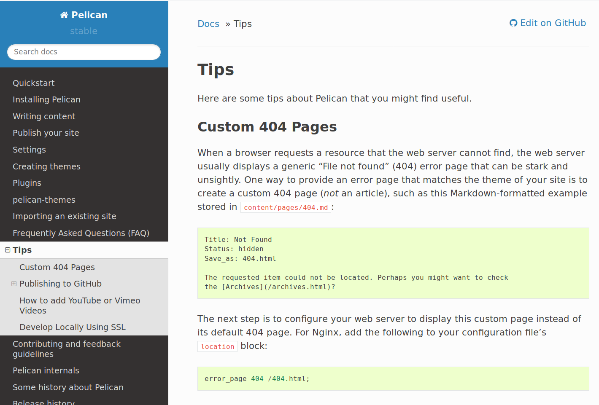

hoge
hoge
hogehoge
hoge
これはテストです。 これはテストです。 これはテストです。 これはテストです。 これはテストです。 これはテストです。 これはテストです。 これはテストです。 これはテストです。 これはテストです。 これはテストです。 これはテストです。 これはテストです。 これはテストです。 これはテストです。 これはテストです。 これはテストです。 これはテストです。 これはテストです。 これはテストです。 これはテストです。 これはテストです。 これはテストです。 これはテストです。 これはテストです。
TeX
\(A = B \times C\)
$$E = m c^2$$
\begin{align*}
A = \frac{1}{f}
\end{align*}
[A = B \times C]
picture

Tweet